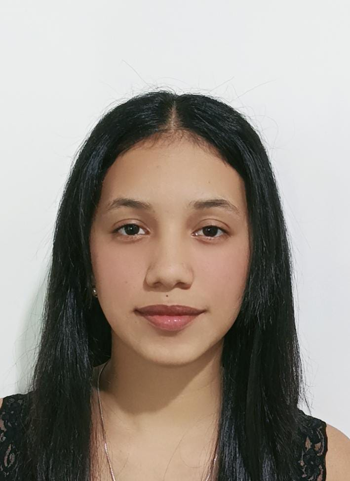

Nombre: Brithany Gia Macias Toala
Ubicación: Monterrey calle 10, Manta, Ecuador
Teléfono: +593 98 907 9743
Email: Brithany.macias.t@gmail.com
Digitalización de documentos, uso de sistemas Quipux y automatización de matrices de datos.
Gestión de reservas, facturación y manejo de cuentas diarias.
| Nombre | Cargo/Profesión | Teléfono | Correo Electrónico |
|---|---|---|---|
| Ing. Manuel Zavala | Tutor de Pasantías - CNEL EP | 098 883 8591 | contacto@cnel.gob.ec |
| Sr. Julio Toala | Dueño de Negocio - J'ulianos | 096 798 2647 | julio.toala@example.com |
| Docente ULEAM | Referencia Académica | 099 000 0000 | docente.software@uleam.edu.ec |